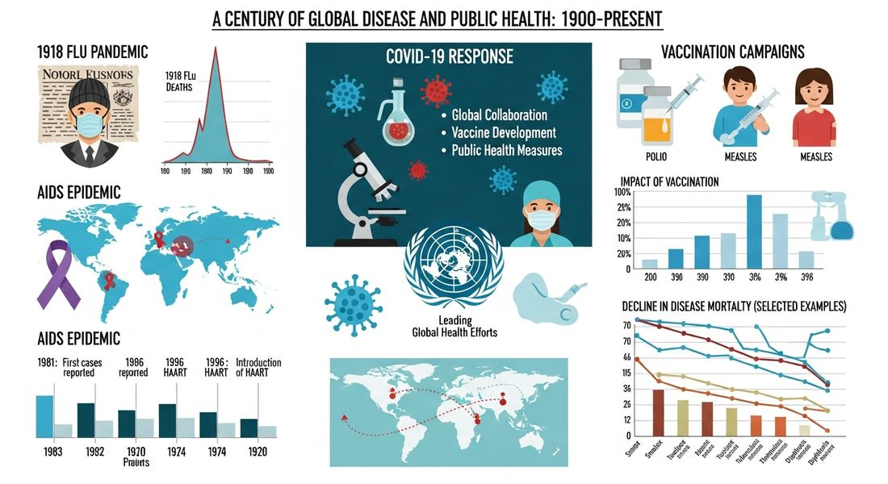
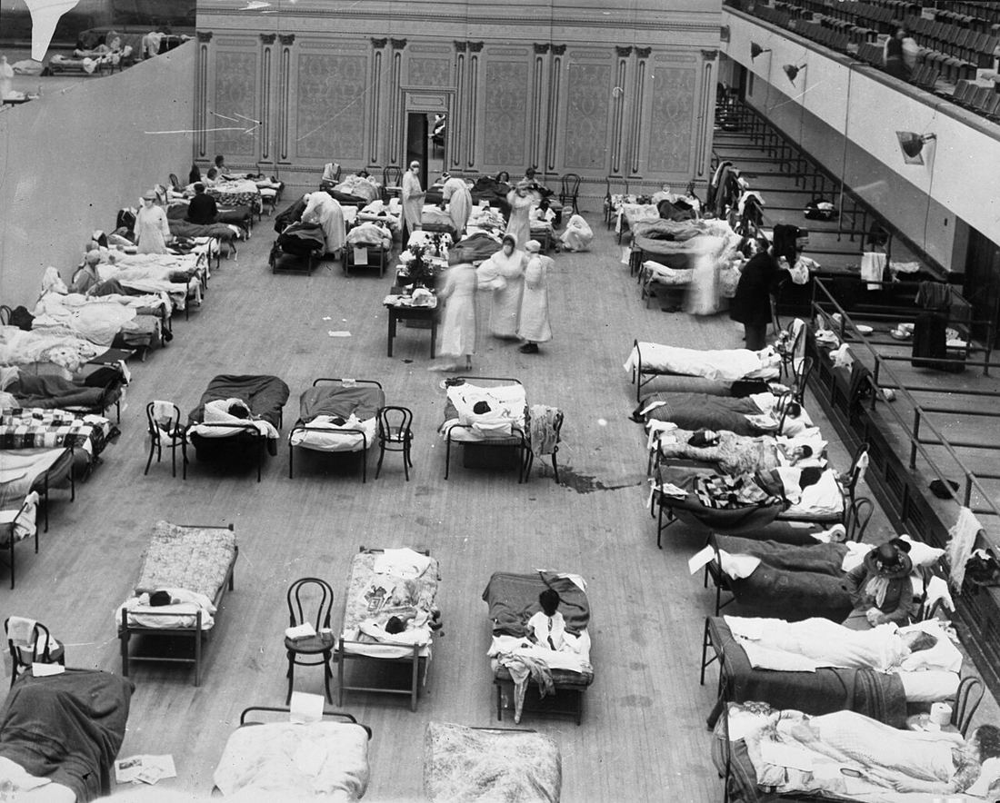

9.2 Technological Advances and Limitations After 1900: Disease
- LO-A: Old diseases persisted in poverty: Malaria, tuberculosis, and cholera continued to kill millions throughout the 20th century, not because medicine couldn't address them, but because the people suffering from them lacked access to treatment and lived in conditions (polluted water, overcrowding, malnutrition) that made them vulnerable. These were diseases of inequality as much as of biology. New epidemic diseases emerged: The 1918 influenza pandemic killed 50–100 million people worldwide, more than WWI itself. Later in the century, Ebola and HIV/AIDS emerged as new threats, demonstrating that globalization and ecological disruption could create new disease vectors. Modern travel spread diseases faster than ever before. Technology advanced but had limits: Medical science made extraordinary progress, but each advance revealed new limitations. Antibiotics created antibiotic-resistant bacteria. HIV/AIDS proved difficult to treat because the virus mutates rapidly. Ebola remained feared because no effective vaccine existed for decades. The pandemic of 1918 spread in part because of the mass movement of WWI soldiers. Longevity created new diseases: As people lived longer due to medical advances, diseases of old age, heart disease, Alzheimer's disease, became major causes of death and disability. These diseases of longevity create new social and healthcare burdens in aging societies.
Try each question before revealing the answer.
1. Why did the 1918 influenza pandemic kill so many people so quickly?
2. How did HIV/AIDS spread globally and why was it difficult to contain?
3. Why do diseases of poverty like malaria and tuberculosis persist even though they can be prevented and treated?
- Explain how environmental factors affected human populations over time, including how diseases associated with poverty, emergent epidemic diseases, and diseases of increased longevity had significant effects on global populations
Tap a term for its definition.
-
Definition: An epidemic of an infectious disease that spreads across countries or continents. Significance: The 1918 influenza pandemic killed 50–100 million people, demonstrating that modern transportation could spread disease globally with terrifying speed.
-
Definition: A mosquito-borne disease caused by Plasmodium parasites. Significance: A CED illustrative example of diseases associated with poverty; killed over 400,000 people annually even in the 21st century, primarily in sub-Saharan Africa.
-
Definition: A bacterial lung infection spread through the air. Significance: A CED illustrative example; the leading infectious disease killer worldwide as late as 2019, concentrated in poor and overcrowded communities.
-
Definition: HIV (Human Immunodeficiency Virus) attacks the immune system; AIDS (Acquired Immunodeficiency Syndrome) is the late stage of HIV infection. Significance: A CED illustrative example of emergent epidemic disease; 36 million deaths by 2020, devastating sub-Saharan Africa in particular.
-
Definition: A hemorrhagic fever virus with very high mortality rates, spread through direct contact with bodily fluids. Significance: A CED illustrative example; outbreaks in west and central Africa demonstrated the persistent threat of emergent epidemic diseases in the 21st century.
-
Definition: The ability of bacteria to survive exposure to antibiotics, due to evolution. Significance: A major 21st-century health threat created by overuse of antibiotics; illustrates how medical advances can generate new problems.
🦠 Diseases of Poverty: Persistent Killers (KC-6.1.III.A)
Despite extraordinary medical advances in the 20th century, certain diseases continued to devastate human populations, primarily because they were concentrated in the world's poorest communities, where access to prevention and treatment was limited. The AP CED identifies malaria, tuberculosis, and cholera as illustrative examples of "diseases associated with poverty" that "persisted" alongside medical progress.
Malaria, transmitted by female Anopheles mosquitoes carrying Plasmodium parasites, infected over 200 million people annually even at the start of the 21st century and killed hundreds of thousands each year, mostly children under five in sub-Saharan Africa. Effective treatments and prevention tools (bed nets, insecticides, antimalarial drugs) existed but were inaccessible to the poorest populations. DDT spraying dramatically reduced malaria in many regions mid-century, but was later restricted due to environmental damage (killing birds and disrupting ecosystems). The disease illustrated the gap between medical knowledge and practical access. It persisted not because science couldn't address it, but because the people who suffered from it couldn't access the solutions.
Tuberculosis, a bacterial lung infection spread through the air, was the world's leading infectious disease killer even as late as 2019. TB thrives in overcrowded conditions: prisons, urban slums, refugee camps. It was technically curable with a 6-month antibiotic regimen, but that regimen required consistent healthcare access and patient compliance, both difficult in poor and unstable regions. The emergence of drug-resistant TB (bacteria that had evolved resistance to standard antibiotics) made treatment even harder and more expensive. Cholera, spread through contaminated water, similarly persisted wherever clean water and sanitation were unavailable, repeatedly devastating populations in South Asia, Africa, and Latin America after natural disasters or conflict disrupted water systems.

Image credit not specified.
AI-generated illustration (Google Gemini, 2025), commercially licensed.

Image credit not specified.
Emergency influenza hospital ward at Oakland Municipal Auditorium during the 1918 pandemic. Photo: Edward A. "Doc" Rogers. Public domain, Wikimedia Commons.
😷 The 1918 Influenza Pandemic: Deadlier Than War (KC-6.1.III.A)
The most lethal disease event of the 20th century was not AIDS or Ebola. It was the 1918 influenza pandemic, which the CED explicitly lists as an illustrative example of "emergent epidemic diseases." Misnamed the "Spanish Flu" (Spain was merely the first country to report it openly, neutral nations had no wartime censorship), the pandemic infected an estimated 500 million people, one-third of the global population at the time, and killed between 50 and 100 million. For comparison, WWI killed about 17–20 million over four years; the flu killed more in months.
Several factors made the pandemic so deadly. The virus itself was unusually virulent, most influenza kills the very old and very young, but the 1918 strain was particularly deadly for healthy young adults, perhaps due to an unusually powerful immune response (a "cytokine storm") that damaged lungs. WWI created ideal conditions for spread: millions of soldiers crowded in trenches, camps, and troop ships, perfect incubators for infectious disease. Once soldiers returned home, they brought the virus with them. Wartime censorship meant governments suppressed news of mass illness to maintain morale, delaying public health responses. And there were no antibiotics to treat the bacterial pneumonia that actually killed most victims. Alexander Fleming wouldn't discover penicillin until 1928.
The pandemic's consequences were profound. It killed more people than the entire war it accompanied. It disrupted economies, overwhelmed hospitals, and shaped public health systems: the pandemic's devastating impact was a major catalyst for establishing national and international public health infrastructure in the 1920s and 1930s.
🔴 HIV/AIDS: A Modern Plague (KC-6.1.III.A)
In 1981, doctors in the United States began noticing a cluster of unusual cases: previously healthy young men were dying from infections that healthy immune systems normally fight off easily. The cause was eventually identified as HIV (Human Immunodeficiency Virus), a virus that attacked and destroyed the immune system, leaving the body unable to fight even minor infections. The late stage of HIV infection, AIDS (Acquired Immunodeficiency Syndrome), was nearly 100% fatal in the early years of the epidemic.
HIV spread primarily through blood-to-blood contact (shared needles, blood transfusions) and sexual transmission. The disease had likely existed in central Africa for decades, probably transmitted from chimpanzees to humans, before globalizing through international travel and migration. Once in the human population, its long asymptomatic incubation period (infected people could spread it for years before knowing they were sick) made containment nearly impossible. Government responses in many countries were slow, particularly where the initial visible victims were stigmatized minorities (gay men in the US, intravenous drug users in Europe). The Reagan administration in the US was widely criticized for years of inaction while tens of thousands died.
By 2000, AIDS had become the leading cause of death in sub-Saharan Africa, devastating entire generations. Life expectancy in countries like Zimbabwe and Botswana fell by 15–20 years due to AIDS deaths. The epidemic killed approximately 36 million people by 2020. Antiretroviral drugs, developed in the 1990s, transformed HIV from a death sentence to a manageable chronic condition, but only for those with access to expensive medications, which in practice meant primarily people in wealthy countries or through international aid programs.
🌡️ Ebola and Emergent Diseases: New Threats in a Connected World
Ebola virus disease, first identified in 1976 in the Democratic Republic of Congo near the Ebola River, became one of the most feared diseases of the late 20th and early 21st centuries. A hemorrhagic fever that causes internal bleeding and organ failure, Ebola has mortality rates of 25–90% in different outbreaks. The 2014–2016 West African epidemic, the largest in history, killed over 11,000 people in Guinea, Sierra Leone, and Liberia before being contained through intensive contact-tracing and quarantine measures.
Ebola's emergence illustrates a crucial dynamic of the modern era: ecological disruption and globalization create new opportunities for disease transmission. As humans encroach on forests through mining, logging, and agricultural expansion, they come into contact with animal populations (bats, primates) that carry viruses humans have never encountered before, and for which human immune systems have no defenses. Modern transportation then potentially carries these new pathogens globally within hours. The same interconnectedness that drives economic globalization accelerates the spread of disease.
👴 Diseases of Longevity: New Problems from Success (KC-6.1.III.A)
The CED identifies a third category that is easy to overlook: diseases associated with increased longevity, specifically heart disease and Alzheimer's disease. As vaccines, antibiotics, and improved nutrition extended human lifespans dramatically, people began living long enough to develop diseases that rarely appeared when most people died before 60 or 70.
Heart disease, the leading cause of death in wealthy countries, is strongly associated with aging, sedentary lifestyles, and diets high in processed foods and saturated fat. As the 20th century brought longer lives and more sedentary office work and processed food (consequences of industrialization and globalization), heart disease rates rose. Alzheimer's disease, a progressive neurological condition that destroys memory and cognition, affects primarily the elderly; fewer than 5% of cases occur before age 65. As populations age, Alzheimer's rates rise, a disease that was relatively rare when most people died before their 70s now affects tens of millions worldwide. These diseases of longevity create massive healthcare costs and social burdens in aging societies, challenging the very success of 20th-century medicine.
These videos will help you review Technological Advances and Limitations After 1900: Disease and solidify key concepts before your exam.
- WWI conditions facilitated rapid spread, and antibiotics to treat secondary infections did not yet exist.
- Governments deliberately concealed the pandemic to protect economic interests.
- The virus was engineered as a biological weapon by the German military.
- Medical science of the era lacked any understanding of germ theory.
- heart disease and Alzheimer's disease.
- Ebola and the 1918 influenza pandemic.
- cancer and diabetes.
- malaria, tuberculosis, and cholera.
- The failure of international organizations to address human rights violations
- The ways in which global interconnectedness accelerated the spread of new epidemic diseases
- The deliberate neglect of African nations by Western pharmaceutical companies
- The role of nationalism in impeding international cooperation
- they spread primarily through global trade networks.
- they result from new industrial pollutants introduced in the 20th century.
- as medical advances extended lifespans, more people lived long enough to develop these age-related conditions.
- they disproportionately affect populations in the developing world.
- The development of vaccines against smallpox and polio in the mid-20th century
- The global eradication of smallpox by 1980
- The discovery of penicillin by Alexander Fleming in 1928
- The persistence of malaria and tuberculosis as major killers despite existing treatments